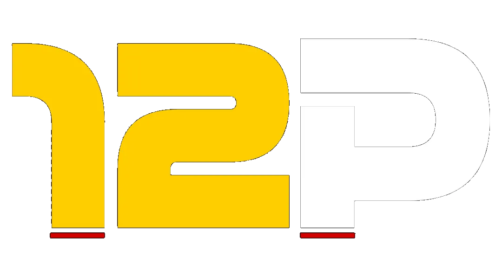

Radar de Feiras na China
Carregando…
Verificando última atualização…
Todos os meses
Todos os nichos
×
Mostrar só marcadas
—
Encontradas
—
Marcadas
—
Cidades
Feira
Datas
Local
Interesse
Buscando data/fairs.json…